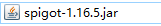
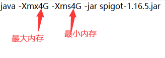
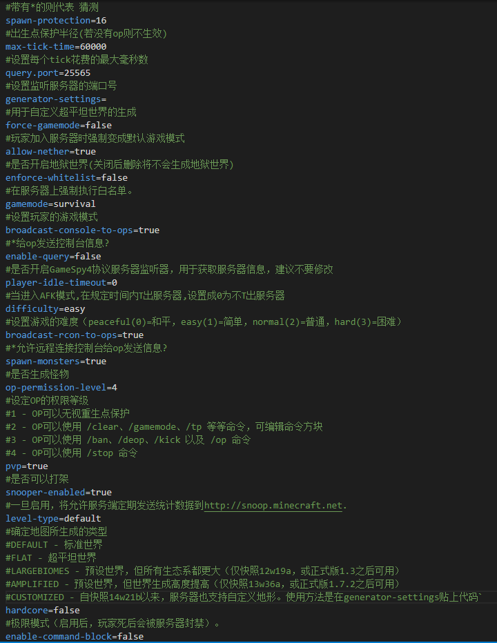
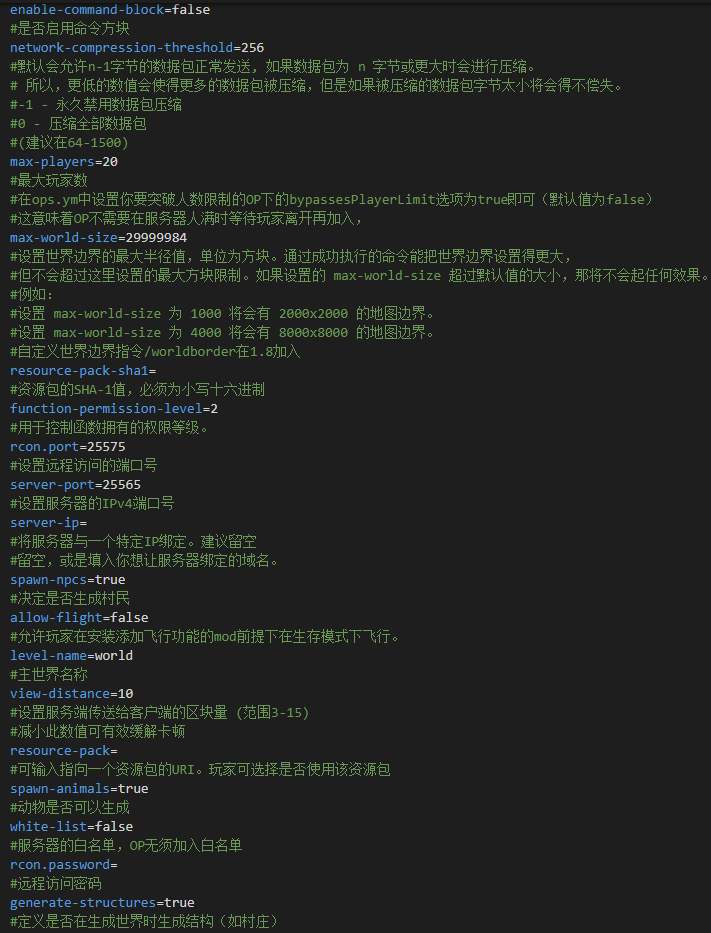
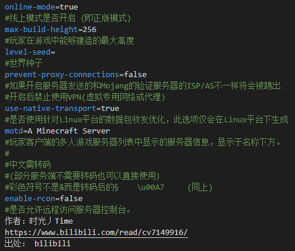

事情的起因是阔耐的弟弟想过一把当腐竹的瘾，正好我前几天正研究内网穿透，正好借此机会实战。
要搭一个游戏服务器，必须要有该游戏的服务端，对于第三方服务器产业如此发达的Minecraft来讲，傻瓜式开服端已经遍地都是了；为了方便，我使用spigot1.16.5进行的游戏环境搭建。
创建一个bat文件在运行时给服务端添加分配内存的启动参数
然后运行bat，spigot会下载服务器依赖文件，等一切准备妥当之后服务端会提示使用/help查看全部指令。
此时就代表服务器开好了，但如果非正版玩家，会提示无效的会话。。。。
这就涉及到服务器的配置，使用任意一款文本编辑器，例如VScode，打开server.properties文件，以下是文件汉化表
  配置完毕后重启spigot，在本地的服务端配置就告一段落
接下来就是把存在于在本地的文件通过内网穿透